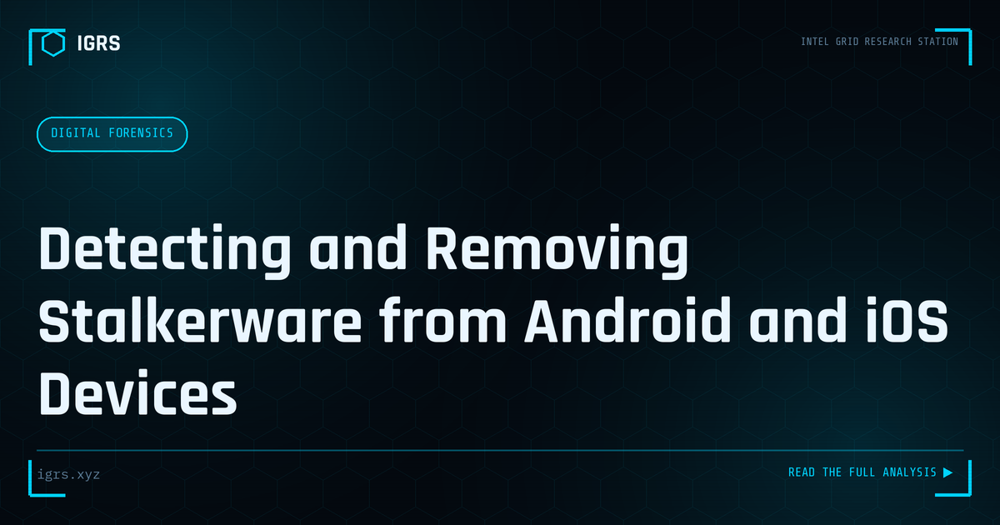

Detecting and Removing Stalkerware from Android and iOS Devices
| File No. | IGRS-031/2026 |
| Subject | Technical guide to identifying commercial surveillance software on personal devices |
| Category | Privacy & Safety |
| Author | Manuj Kumar Pandey |
| Published | 2026-05-23 |
| Reading time | 12 minutes |
Stalkerware is commercial spyware typically installed by an intimate partner or family member without consent. How to detect it, document it for legal purposes, and safely remove it.
Stalkerware: Surveillance in Your Pocket
Stalkerware — covert software that secretly monitors a person's device — represents one of the most invasive and personal cyber threats. Often installed by abusive partners, family members, or others seeking control, it can track location, read messages, monitor calls, and access intimate data without the victim's knowledge. For victims of domestic abuse and surveillance, detecting and removing stalkerware is a serious safety concern. This guide explains how.
What Stalkerware Does
Stalkerware operates covertly, hiding from the device user while transmitting their data to whoever installed it. Its capabilities are deeply invasive:
- Tracking real-time location
- Reading text messages and chat apps
- Monitoring call logs and recordings
- Accessing photos and files
- Activating the camera or microphone
- Logging keystrokes and passwords
How Stalkerware Gets Installed
Stalkerware typically requires brief physical access to the target's unlocked device. The installer downloads and configures the app, then hides it. This is why it is most often installed by people close to the victim — partners, family members, or others with access to the device. Some stalkerware masquerades as legitimate apps or system tools to avoid detection, and it usually requires the device's screen lock to be bypassed or known.
Warning Signs of Stalkerware
| Sign | Possible Indication |
|---|---|
| Rapid battery drain | Background monitoring activity |
| Unusual data usage | Data being transmitted to attacker |
| Device running hot | Constant background processes |
| Unfamiliar apps | Hidden monitoring software |
| Settings changed | Permissions altered for surveillance |
| Abuser knows private details | They are accessing your data |
Detecting Stalkerware
Detecting stalkerware requires careful examination. Check installed apps for anything unfamiliar, review app permissions for suspicious access (apps with location, microphone, and message access), look for device administrator apps you do not recognise, and examine battery and data usage for anomalies. On Android, check whether "install from unknown sources" was enabled. Mobile security apps and the Mobile Verification Toolkit (MVT) can detect known stalkerware.
The Safety-First Approach
Critically, removing stalkerware can alert the abuser and potentially escalate danger. For victims of domestic abuse, safety planning must come first. Before removing stalkerware, consider whether the abuser's loss of access might provoke a dangerous reaction, preserve evidence if pursuing legal action, and seek support from domestic violence services. In abusive situations, the technical removal is only one part of a broader safety strategy.
Removing Stalkerware
Once safety is considered, removal options include:
- Uninstalling the identified app and revoking its permissions
- Removing unrecognised device administrator privileges
- Running a reputable mobile security scan
- As a thorough measure, a factory reset after backing up genuine data
- Changing all passwords from a clean, separate device afterward
Securing the Device Afterward
After removal, secure the device to prevent reinstallation: set a strong, private screen lock the abuser does not know, change passwords for all accounts from a clean device, enable MFA, review and revoke account access, and keep the device updated. Because stalkerware requires physical access, controlling who can access your unlocked device is the foundation of preventing reinstallation.
Legal Recourse in India
| Section | Act | Offence |
|---|---|---|
| Section 66E | IT Act 2000 | Violation of privacy |
| Section 354D | (via BNS S.78) | Stalking |
| Section 77 | BNS 2023 | Voyeurism |
| Section 351 | BNS 2023 | Criminal intimidation |
Installing stalkerware without consent is illegal in India, and victims can file a complaint at cybercrime.gov.in. For preserving evidence, forensic examination of the device can identify the stalkerware and potentially link it to the installer.
Support for Victims
Victims of stalkerware, particularly in abusive relationships, should know that support exists. The confidential reporting channels for crimes against women on cybercrime.gov.in, domestic violence helplines, and women's support organisations can provide both safety guidance and practical help. Stalkerware is a form of abuse and control, and addressing it often requires support beyond the technical removal.
Protecting Against Stalkerware
Prevention centres on device security: use a strong screen lock only you know, never leave your device unlocked and unattended around someone who might misuse access, keep your device updated, be cautious about who has physical access, and periodically review installed apps and permissions. For those concerned about surveillance, awareness of stalkerware and these protective habits provide meaningful defence against one of the most personal and invasive cyber threats, helping restore the privacy and safety that stalkerware steals.